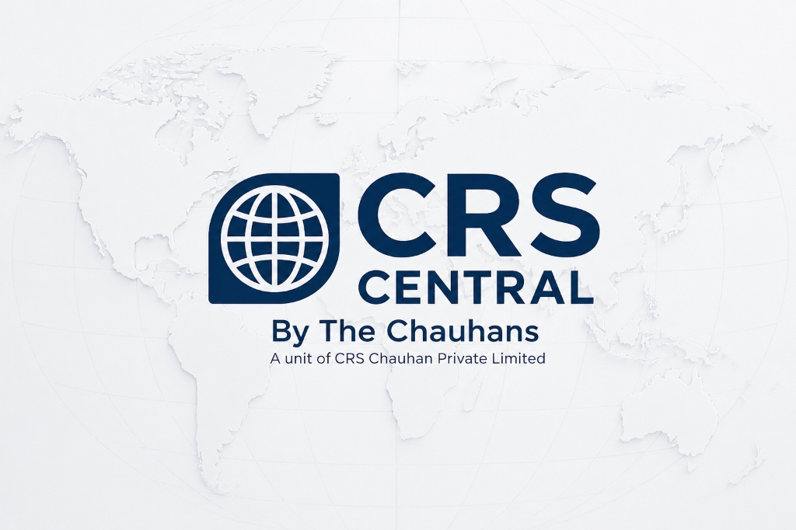
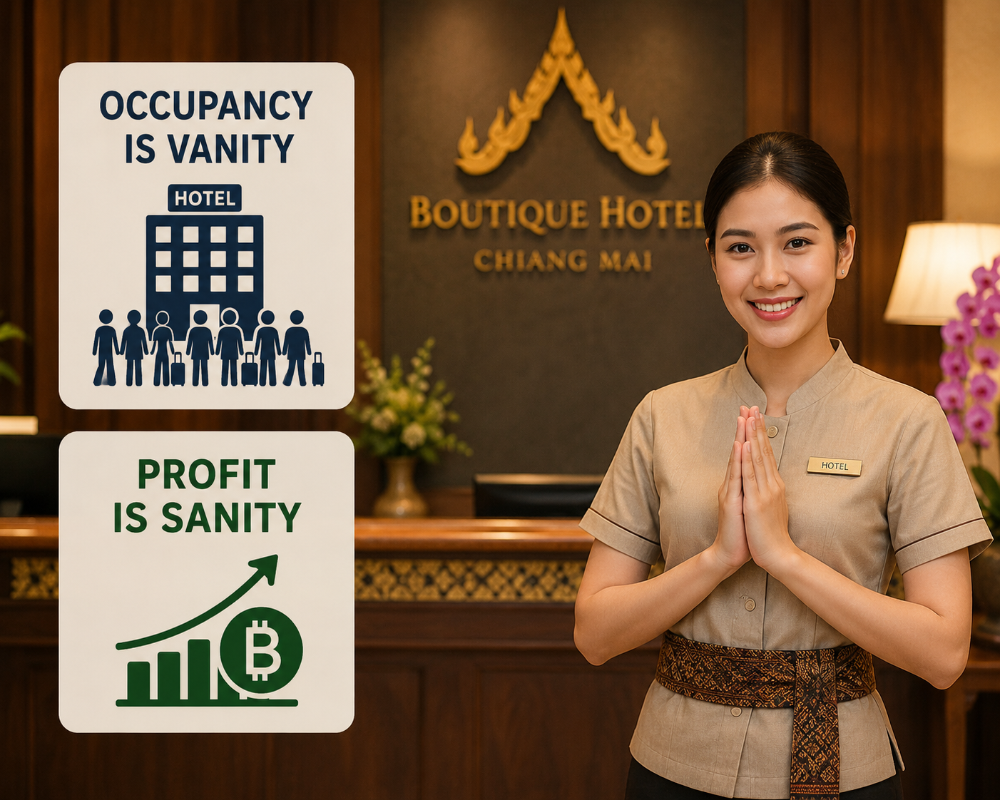
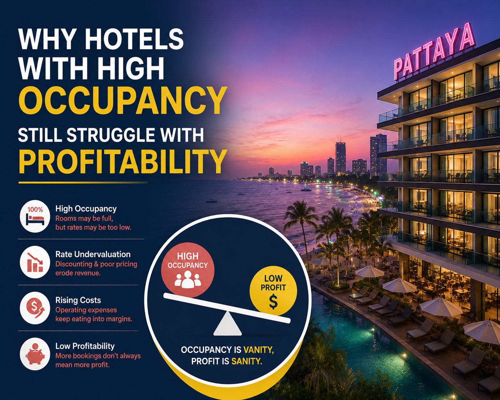
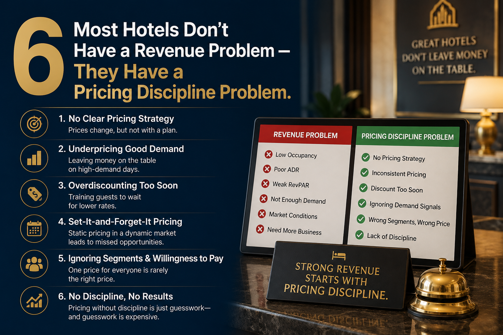
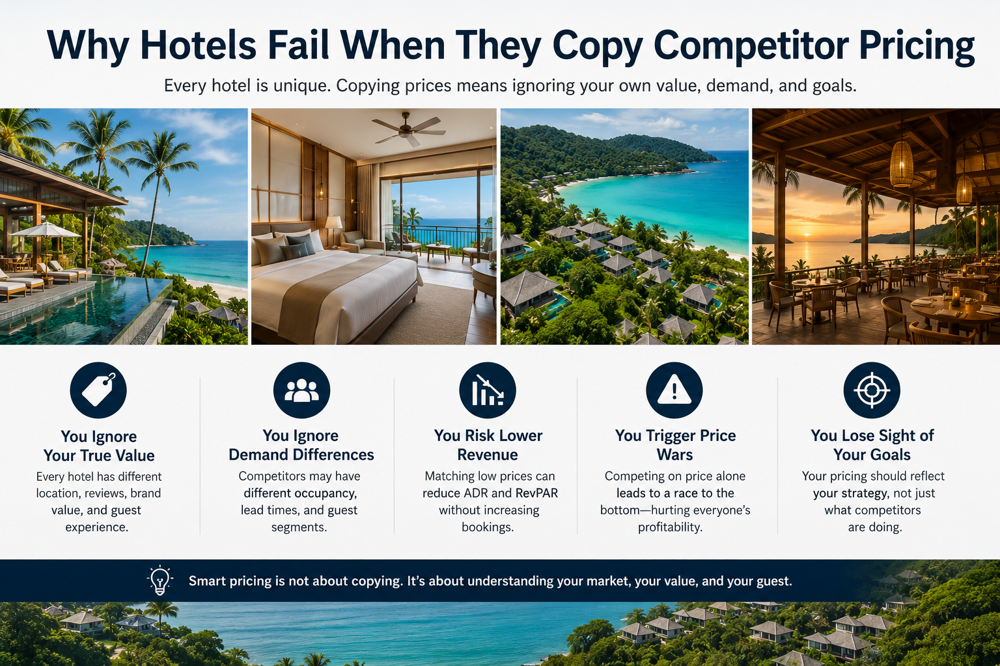
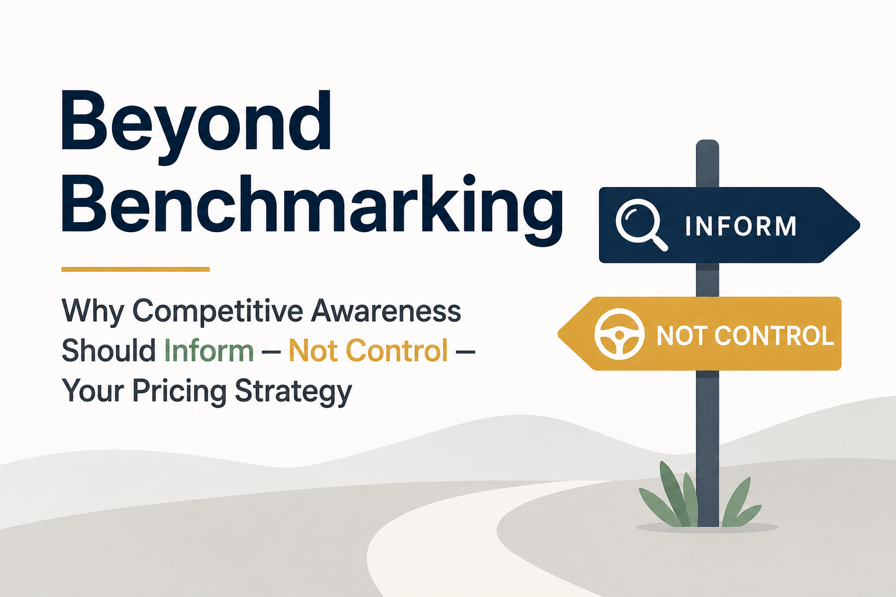
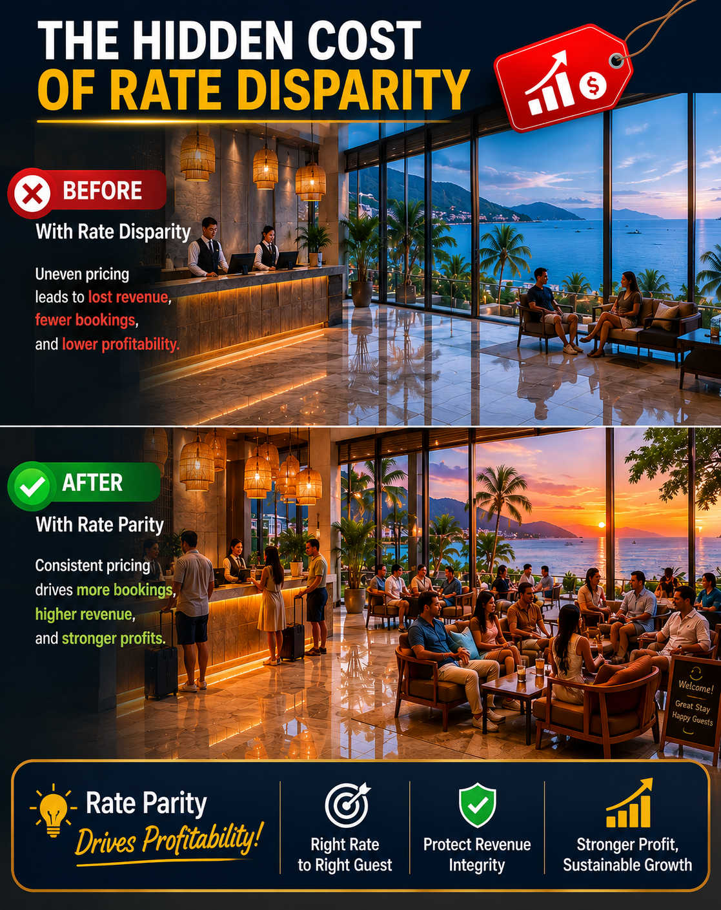
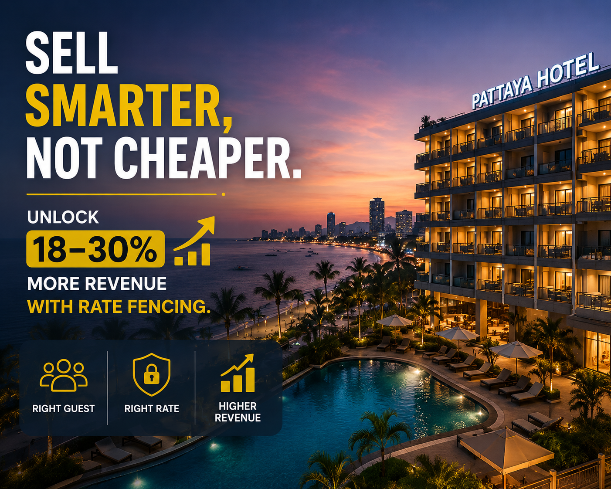

About CRS Central – Smarter Revenue. Stronger Performance.
Helping independent hotels improve performance through smarter pricing, OTA optimization, forecasting, and strategic revenue management.

Smart Revenue Management Insights for Independent Hotels in Thailand, Laos, and Southeast Asia

Helping independent hotels improve performance through smarter pricing, OTA optimization, forecasting, and strategic revenue management.

Revenue management is a critical commercial strategy in the hospitality industry. Learn how selling the right room to the right guest transforms profits...

The hospitality landscape in Thailand and Southeast Asia is evolving rapidly. Reactive pricing is no longer enough to maintain profitability.

High occupancy does not always mean high profit. Learn why net revenue and channel profitability are what matters most in hotel operations.

Peak season occupancy can be strong, but revenue performance weak. Learn what goes wrong and how to fix your property's pricing structure.

Independent properties offer unique experiences but often set rates too low. Learn how to price your value correctly and boost RevPAR.

The bookings are there, but pricing execution is the gap. Discover what we see in 80% of hotel revenue audits and how to establish pricing discipline.

Adjusting rates in real time based on demand and market trends. Learn how dynamic pricing drives conversions and preserves rate integrity.
How data discipline prevents emotional rate slashing when occupancy seems low. Protect your hotel's ADR and build long-term value.

Cutting prices trains guests and OTA algorithms to expect discounts. Discover why value-based pricing yields higher net revenue.

Copying competitor rates is a common shortcut that ignores your property's unique demand profile. Transition to a demand-led pricing strategy.
Blind competitor rate tracking creates a race to the bottom. Rely on market intelligence and demand forecasting instead.

Benchmark competitor rates to gather data, but do not let them control your decisions. Focus on your hotel's booking pace and value.

Shifting pricing strategy from competitor-set tracking to demand pace. Improve ADR and RevPAR during compressed periods.

Forecasting is the blueprint of hotel strategy. Plan staffing, inventory distribution, and marketing budgets around accurate projections.
Understanding Revenue Per Available Room and how to yield it effectively. Balance occupancy and average daily rate for max profitability.

OTAs are excellent marketing billboards. Optimize content, review scores, and room mapping to improve organic visibility and reduce commission dependency.

Lower distribution costs by converting OTA browsers into direct bookers. Implement value-added incentives on your hotel's website.

Inconsistent pricing damages brand trust. Learn how OTA undercutting occurs and how to implement strict rate parity audits.
Silent revenue drains occur through bad channel mix and mapping errors. Optimize distribution networks for maximum net profits.

Operating in Pattaya's dense market requires structured, data-driven revenue management to outperform large branded chains.

Save on in-house employee overheads while using seasoned hoteliers to manage pricing, inventory, and promotions in Pattaya.
Static pricing misses event surges and weekday-weekend shifts in Pattaya. Implement automated rate optimization to capture demand.

Understanding OTA visibility scores, rate parity leaks, and commission management in Pattaya's competitive hospitality market.

Low season is not the enemy. Address correct demand forecasting and guest segmentation to maintain robust ADR in Pattaya.

Implement logical fencing (booking conditions, non-refundable rates) to charge different prices to different segments.
Smart Revenue Management
CRS Central – Smarter Revenue. Stronger Performance.
Helping Independent Hotels Sell Smarter, Earn More, and Grow Faster.
CRS Central – Smarter Revenue. Stronger Performance.
Helping Independent Hotels Sell Smarter, Earn More, and Grow Faster.
The hospitality industry has changed dramatically over the last few years. Today, independent hotels are expected to compete in a fast-moving digital marketplace where pricing changes daily, guest behaviour shifts constantly, and online visibility directly impacts revenue.
Managing a hotel is already demanding. But managing rates, inventory, OTA platforms, market positioning, and demand forecasting at the same time can quickly become overwhelming.
For many hotels, revenue management is no longer optional.
That is where CRS Central comes in.
What Is CRS Central?
CRS Central is a revenue management and hotel distribution solutions company focused on helping independent hotels improve performance through smarter pricing, OTA optimization, forecasting, and strategic revenue management.
We are not just consultants providing occasional advice.
Our team consists of experienced revenue professionals and ex-hoteliers who understand both hotel operations and commercial strategy. We combine practical hospitality knowledge with data-driven revenue management to help hotels grow sustainably.
Why Hotels Need Revenue Management Today
Many hotels still rely on manual pricing, competitor copying, or reactive discounting to drive bookings. While this may generate short-term occupancy, it often leads to:
Lower ADR
Higher OTA commissions
Revenue leakage
Weak pricing consistency
Reduced profitability
At the same time, managing multiple OTA platforms, inventory updates, promotions, and pricing strategies requires constant monitoring and expertise.
Most hotels need multiple staff members to handle these responsibilities effectively.
But hiring an in-house revenue team can be expensive.
How CRS Central Helps Hotels
At CRS Central, we simplify and manage the revenue side of hotel operations so owners and management teams can focus on guest experience and operations.
We help hotels through a combination of strategy, monitoring, optimization, and hands-on execution.
OTA Management & Optimization
Online Travel Agencies such as Booking.com and Agoda play a major role in hotel distribution today. However, many hotels do not fully optimize their OTA presence.
We help hotels improve visibility, ranking, pricing strategy, and conversion performance across OTA platforms. We also support the expansion of suitable B2B and B2C distribution channels when needed.
The goal is not just more visibility.
Dynamic Pricing & Yield Management
One of the biggest mistakes hotels make is keeping static pricing while demand constantly changes.
At CRS Central, we use demand patterns, booking pace, market trends, seasonality, and competitor analysis to adjust rates strategically.
This allows hotels to:
Maximize high-demand periods
Avoid unnecessary discounting
Improve ADR and RevPAR
Sell rooms at smarter rates
Revenue management is not about selling cheaper.
Inventory Management Across Channels
Managing room inventory across multiple platforms can become complex very quickly.
Incorrect inventory control can lead to:
Overbookings
Lost revenue opportunities
Unsold inventory
Rate inconsistencies
We help hotels maintain structured inventory management across all connected channels to ensure smooth distribution and better revenue control.
Rate Parity & Revenue Leakage Prevention
Many hotels lose revenue without realizing it because of rate disparity across OTAs and direct channels.
When guests see inconsistent pricing online, trust weakens. Over time, direct bookings decline and OTA dependency increases.
CRS Central monitors and manages rate parity to help hotels maintain pricing consistency, improve guest confidence, and reduce hidden revenue leakage.
Competitor Benchmarking & Market Insights
Successful pricing is not based only on competitors.
It is based on understanding the market.
We continuously monitor:
Competitor pricing trends
Market demand shifts
Booking pace patterns
Occupancy movements
Seasonal behaviour
This allows hotels to make more informed and strategic pricing decisions instead of reacting emotionally to market pressure.
Performance Reporting & Revenue Insights
Revenue management should not feel confusing or technical.
At CRS Central, we provide clear and practical reporting that helps hotel owners and managers understand:
What is working
Where revenue is leaking
Which channels perform best
How pricing impacts profitability
Where growth opportunities exist
We focus on actionable insights—not complicated spreadsheets.
A Smarter Alternative to Hiring In-House
Most hotels require two or more employees to manage:
OTAs Pricing Inventor Promotions Reporting Market analysis
Hiring internally also comes with:
Salaries Bonuses Office space Insurance Equipment costs Training and management
CRS Central provides an experienced revenue management function without those overhead costs.
Why Hotels Choose CRS Central
Hotels choose CRS Central because we combine flexibility, experience, and practical execution.
We work closely with hotel teams, adapt to operational realities, and support hotels like a real internal department—not a distant consultancy.
Our team understands hospitality because we come from hospitality backgrounds ourselves.
Growing Across International Hospitality Markets
CRS Central is currently supporting hotels across:
🌏 Thailand🌏 Laos🌏 Africa🌏 Nepal🌏 India
As hospitality markets evolve, independent hotels increasingly require structured revenue strategies to remain competitive and profitable.
Running a hotel today is no longer just about selling rooms.
It is about:
Selling at the right price
Through the right channel
At the right time
To the right guest
That requires structure, consistency, and strategy.
At CRS Central, we help hotels simplify complexity and turn revenue management into a growth engine.
Let’s Grow Your Hotel Smarter
If you want to:
We would love to connect.
📩 info@crscentral.com📱 WhatsApp: +66 990 143 142💬 Line ID: crscentral🌐 www.crscentral.com
CRS Central (a Unit of CRS Chauhan Private Limited) is not just a consultant—we act as your extended revenue management partner. We work directly in your systems to optimize pricing, manage distribution, and maximize your profitability.
Smart Revenue Management
The reality: 👉 High occupancy ≠ High revenue 👉 High revenue ≠ High profitability
In today’s competitive hospitality market, many hotels focus heavily on occupancy.
More rooms sold. Higher occupancy. Busy operations.
But here’s the reality:
This is where Revenue Management changes the game.
Revenue Management
What Is Revenue Management in Hotels?
Hotel Revenue Management is the practice of selling the right room, to the right guest, at the right price, at the right time, through the right channel.
It combines:
Pricing strategy
Demand forecasting
Distribution management
Channel optimization
Booking behaviour analysis
The goal is simple:
Why Revenue Management Is a Game-Changer
Traditionally, many hotels relied on:
Fixed seasonal pricing
Competitor rate matching
Last-minute discounts to fill rooms
This approach leads to:
Revenue leakage
Over-dependence on OTAs
Lower ADR (Average Daily Rate)
Reduced profit margins
Revenue management replaces this with data-driven decision making.
When done correctly, it helps hotels:
Increase ADR without losing occupancy
Identify high-demand periods and protect rates
Reduce unnecessary discounting
Improve channel mix (more direct bookings, less commission-heavy sales)
Forecast demand accurately
Maximise revenue during peak seasons
Changing the Game for Hotel
Why Every Hotel Needs Revenue Management Today
The hospitality landscape has changed:
Shorter booking windows
Strong OTA influence
High price transparency
Constant market fluctuations
Guests compare prices across platforms instantly.
Markets change daily.
Without structured revenue management, hotels often:
Underprice during high demand
Over-discount unnecessarily
Lose revenue through poor channel control
Miss opportunities to maximise profit
The Challenge: Building an In-House Revenue Team
Many hotels understand the importance of revenue management — but struggle with implementation.
Hiring a full-time revenue manager comes with:
High salary costs
Recruitment challenges
Training time
Office space requirements
Equipment and system costs
Bonuses and incentives
Insurance and employee benefits
Need for additional team support
And often, one person alone is not enough.
Revenue management requires:
Continuous monitoring
Market analysis
Forecasting expertise
Distribution knowledge
Pricing discipline
The Smarter Alternative: Revenue Management as a Service
This is where professional revenue management consultancy becomes highly effective.
Instead of building an internal department, hotels can:
Without:
Hiring
Office space
Hardware investment
Staff management
Additional overheads
This model provides flexibility, expertise, and cost efficiency — all in one.
CRS Central: More Than a Consultancy
At CRS Central, we don’t position ourselves as an external consultant.
We work as your extended revenue team.
We integrate with your hotel’s operations, align with your goals, and become part of your daily decision-making process.
What Makes CRS Central Different?
We are not distant advisors.We actively participate in pricing, forecasting, and distribution decisions — just like an in-house team.
Hospitality never operates on fixed hours — and neither do we.Our support is aligned with real-time business needs.
Our team consists of professionals who have worked inside hotels.
We understand:
Operational challenges
Owner expectations
Market realities
Guest behaviour
This allows us to deliver practical, implementable strategies — not just theoretical advice.
Our approach is based on:
Demand forecasting
Booking pace analysis
Channel performance
Pricing optimization
Everything we do is focused on one outcome:
How CRS Central Transforms Hotel Revenue
By working as your revenue partner, we help you:
Increase ADR strategically
Reduce OTA commission impact
Improve direct booking performance
Optimise pricing across all channels
Identify and fix revenue leakage
Align pricing with real demand
We bring structure, discipline, and clarity to your revenue strategy.
The Real Impact
Hotels that adopt professional revenue management consistently outperform those that rely on instinct or reactive pricing.
Because success in today’s market is not about:
It is about: Maximising the value of every room sold
Revenue management is no longer a luxury reserved for large hotel chains.
It is a fundamental business function that directly impacts profitability and with the right partner, it becomes:
More efficient
More cost-effective
More impactful
At CRS Central, we help hotels take control of their revenue — not just increase occupancy, but improve overall financial performance.
🌐 Visit: https://crscentral.com
📩 Let’s connect and explore how your hotel can unlock its full revenue potential.
How Revenue Management Changes the Game
CRS Central (a Unit of CRS Chauhan Private Limited) is not just a consultant—we act as your extended revenue management partner. We work directly in your systems to optimize pricing, manage distribution, and maximize your profitability.
Smart Revenue Management
The hospitality landscape is evolving faster than ever. Markets such as Thailand, India, and Southeast Asia are witnessing rapid growth in hotel inventory, increased OTA dependence, fluctuating demand patterns, and rising operational costs. In this environment, revenue management is no longer a luxury — it is a necessity.
Why Revenue Management Is No Longer Optional for Hotels
The hospitality industry is evolving rapidly. Markets such as Thailand, India, and Southeast Asia are experiencing increased competition, growing OTA influence, changing traveller behaviour, and rising operating costs. In this environment, hotels can no longer rely on traditional pricing or reactive decision-making. Professional revenue management is now essential for long-term profitability and sustainable growth.
At CRS Central, we help hotels take control of their revenue strategy through structured, data-driven revenue management solutions.
The Challenges Hotels Face Today
Across competitive hotel markets, many properties still depend on manual rate changes, outdated pricing models, or OTA-led strategies. While these approaches may help maintain occupancy, they often result in:
Revenue leakage due to incorrect pricing
Overdependence on high-commission distribution channels
Weak demand forecasting and budgeting
High occupancy with low profitability
Increased pressure on internal teams
Without a clear hotel revenue management strategy, hotels risk losing revenue potential and long-term market positioning.
What Effective Revenue Management Really Involves
Revenue management goes beyond frequent rate changes. It is a strategic process that aligns pricing, distribution, inventory, and demand forecasting to maximise total hotel revenue.
CRS Central’s revenue management consultancy focuses on:
Dynamic pricing strategies aligned with demand patterns and market trends
Channel and distribution optimisation to increase direct bookings and reduce OTA costs
Forecasting and budgeting to improve financial visibility
Competitive benchmarking based on accurate market data
Operational efficiency through centralised revenue and reservations support
Why Outsourcing Revenue Management Makes Sense
In markets such as Thailand, India, and Southeast Asia, building and retaining an in-house revenue team can be challenging and costly. Partnering with a specialist consultancy like CRS Central provides hotels with:
Access to experienced revenue management professionals
Lower and predictable operating costs
Continuous monitoring and optimisation
Proven systems, tools, and best practices
Scalable solutions as the business grows
This approach allows hotel owners, asset managers, and general managers to focus on operations and guest experience while revenue performance is professionally managed.
CRS Central’s Approach
CRS Central is a revenue management consultancy, not a software provider. Our approach is practical, transparent, and focused on delivering measurable results.
We begin with a Free Revenue Audit, analysing:
Existing pricing and rate structures
Distribution channel mix and costs
Market positioning and competitive performance
Revenue gaps and cost inefficiencies
Based on this analysis, we implement tailored strategies designed to deliver sustainable revenue growth and improved profitability.
The Future of Hotel Revenue Management
As competition intensifies across markets such as Thailand, India, and Southeast Asia, hotels that adopt professional revenue management will consistently outperform those that do not.
The future belongs to hotels that:
Use data-driven pricing strategies
Control distribution and channel mix
Focus on profitability, not just occupancy
Partner with experienced revenue specialists
Who We Work With
CRS Central supports:
Independent hotels and resorts
Boutique and lifestyle properties
Small and mid-sized hotel groups
New hotel openings and pre-opening projects
Our solutions are designed to adapt to different hotel segments and competitive markets.
Ready to Optimise Your Hotel Revenue?
If you want to increase revenue, reduce distribution costs, and improve profitability, CRS Central is ready to help.
CRS Central (a Unit of CRS Chauhan Private Limited) is not just a consultant—we act as your extended revenue management partner. We work directly in your systems to optimize pricing, manage distribution, and maximize your profitability.
Smart Revenue Management
And Where Hotels Lose Money Without Realizing It
And Where Hotels Lose Money Without Realizing It
In the hotel industry, one number often gets the most attention: Occupancy
Daily reports highlight it.Teams celebrate it.Owners ask about it first.
But here’s the uncomfortable truth:
In fact, many hotels run at 70–80% occupancy and still underperform financially.
The Occupancy Trap
At first glance, it seems logical:
Lower price → More bookings → Higher occupancy
But in reality:
Lower rates reduce overall revenue
High occupancy increases operational costs
Profit margins shrink
Profit is the Real Goal
What truly matters is not how many rooms you sell…
This is where metrics like:
ADR (Average Daily Rate)
RevPAR (Revenue Per Available Room)
become more important than occupancy alone.
Where Hotels Lose Money Without Realizing It
Most revenue loss doesn’t happen in obvious ways. It happens quietly, through daily decisions.
Here are the Top 7 Revenue Leaks:
Reducing prices too quickly or too often.
Heavy dependence on OTAs like Booking.com, Agoda, and Expedia.
Different prices across platforms.
Rooms sell out fast — but at low rates.
No clear understanding of booking pace and demand trends.
All rooms are made available at all times.
Copying competitor rates without understanding demand.
The Real Impact
Individually, these may seem small.
But together, they lead to:
❌ Lower RevPAR❌ Higher OTA costs❌ Reduced profitability❌ Weak pricing power
From Occupancy Focus to Revenue Strategy
Hotels that perform better make one key shift:
This requires:
✔️ Dynamic pricing based on demand✔️ Booking pace analysis✔️ Channel optimization✔️ Rate parity control✔️ Inventory management
How This Improves RevPAR
When pricing is aligned with demand:
Rooms are not sold too cheaply
High-demand periods are maximized
Direct bookings increase
Profit margins improve
How CRS Central Helps
At CRS Central, we focus on one thing:
We work as your extended revenue team, helping you:
✔️ Identify revenue leakage✔️ Fix pricing gaps✔️ Optimize channel mix✔️ Reduce unnecessary discounting✔️ Improve demand forecasting
Our Impact
Increase RevPAR by up to 15%
Improve occupancy by up to 30%
Reduce OTA dependency
Build long-term profitability
CRS Central: We don’t rely on guesswork.
We use:
Real demand data
Booking pace trends
Market insights
Structured pricing strategies
Occupancy looks good on reports. But profit builds your business.
Let’s Identify Your Revenue Gaps
At CRS Central, we help hotels uncover hidden losses and unlock their true revenue potential.
📩 Get a Revenue Audit Done🌐 https://crscentral.com
CRS Central (a Unit of CRS Chauhan Private Limited) is not just a consultant—we act as your extended revenue management partner. We work directly in your systems to optimize pricing, manage distribution, and maximize your profitability.
Smart Revenue Management
Why High Occupancy ≠ High Revenue in Hotels
Many hotels face a common frustration: peak season demand, strong occupancy — yet weak revenue performance. Across markets like Thailand, India, and Southeast Asia, this issue appears repeatedly.
The reality is simple: 👉 High occupancy ≠ high revenue
Hotels can be full and still underperform financially when pricing, distribution, and revenue strategy are misaligned.
The Occupancy Myth in Hotel Revenue
Occupancy is only one performance indicator. Hotels that focus solely on filling rooms often overlook:
ADR, RevPAR, Net revenue commissions & Channel profitability.
This is why peak season ≠ peak profitability for many hotels.
Peak Season but Low Revenue: What’s Really Going Wrong?
When demand is strong but revenue lags, hotels are often impacted by:
Over-discounting due to fear of losing bookings
Heavy OTA reliance even during high-demand periods
Static or poorly structured pricing strategies
Reactive pricing driven by competitors
Weak demand forecasting and booking pace analysis
The result is revenue leakage during periods when hotels should be maximising returns.
How Professional Revenue Management Changes the Outcome
Effective hotel revenue management focuses on revenue quality, not volume. When implemented correctly:
High occupancy ≠ discounted rates
Peak demand ≠ OTA dependency
Pricing decisions ≠ guesswork
Instead, hotels can:
Increase ADR without sacrificing occupancy
Protect rates during peak demand
Reduce OTA commissions and improve net revenue
Apply dynamic pricing based on real demand
Optimise inventory across all channels
Why In-House Revenue Management Often Falls Short
In many hotels, revenue decisions are handled by teams already managing operations or sales. This often leads to:
Manual reporting instead of real forecasting
Limited market benchmarking
Inconsistent pricing oversight
Without dedicated expertise, revenue management ≠ strategic advantage.
CRS Central’s Profit-Focused Revenue Approach
CRS Central is a specialised hotel revenue management consultancy focused on turning demand into profit.
We start with a Free Revenue Audit, analysing:
Peak-season pricing behaviour
Channel mix and OTA cost impact
Demand patterns and booking pace
Revenue gaps and missed opportunities
Our approach is practical, data-driven, and results-oriented.
Peak Season but Low Revenue? Let’s Fix It.
If your hotel is full but revenue is underperforming, your strategy needs a reset.
Get Your Free Revenue Audit Today
CRS Central (a Unit of CRS Chauhan Private Limited) is not just a consultant—we act as your extended revenue management partner. We work directly in your systems to optimize pricing, manage distribution, and maximize your profitability.
Smart Revenue Management
And How Smarter Revenue Management Unlocks Stronger Profitability
Boutique and independent hotels often offer something many large chain hotels struggle to replicate: personality, warmth, and a memorable guest experience. They may have unique architecture, thoughtful design, personalized service, or a deeper connection to the local culture. In many cases, guests leave these hotels with stronger memories than they do from staying at a standardized branded property.
Yet despite delivering a quality experience, many boutique and independent hotels still face one common challenge:
This usually does not happen because the hotel lacks value. It happens because the hotel lacks a structured pricing strategy.
The Hidden Gap Between Product Quality and Revenue Performance
Many independent hotels invest significantly in their property. Owners spend money improving rooms, upgrading bathrooms, enhancing guest service, refining breakfast offerings, or creating beautiful public spaces. They care deeply about hospitality and guest satisfaction.
However, while product quality improves, pricing strategy often remains reactive.
Rates may be adjusted based on what a nearby competitor is charging. Discounts may be launched quickly when bookings feel slow. Promotions may be accepted from OTAs without fully understanding the long-term impact.
As a result, a hotel with strong guest appeal may still underperform financially.
Why This Happens More Often in Independent Hotels
Large hotel chains often have centralized revenue teams, pricing systems, brand data, and forecasting tools. Independent hotels usually do not have these resources internally.
That means pricing decisions are often handled by already busy owners, general managers, or front office teams who are also managing daily operations. Understandably, revenue strategy becomes reactive rather than proactive.
For example, if bookings slow for a few days, rates may be reduced immediately. If a competitor drops price, the reaction may be to match it. If an OTA suggests a promotion, it may be accepted quickly to generate short-term occupancy.
These decisions can feel practical in the moment—but repeated over time, they reduce profitability.
Price Is Not the Same as Value
One of the biggest misunderstandings in hospitality is assuming that guests only choose the cheapest option.
In reality, many travelers make decisions based on a combination of factors. They look at reviews, cleanliness, location, photos, atmosphere, design, trust, convenience, and the feeling the hotel creates.
A boutique hotel with strong ratings and a distinctive experience often has pricing power that owners underestimate.
Guests are often willing to pay more for charm, comfort, authenticity, and service consistency. But if the hotel constantly underprices itself, it sends the wrong message to the market and leaves money on the table.
The Long-Term Cost of Discounting Too Much
Discounting can sometimes be useful when applied strategically. But when used too frequently, it creates problems.
First, it lowers ADR (Average Daily Rate), which directly impacts room revenue. Second, it often attracts highly price-sensitive guests who are less loyal and more likely to compare every rate. Third, it increases dependence on OTA channels, where commissions further reduce profit.
Over time, the market begins to associate the hotel with lower pricing rather than higher value. Once that happens, increasing rates later becomes more difficult.
The hotel may appear busy—but profitability remains weak.
Why Bigger Chains Often Outperform Smaller Hotels
Large chains do not always outperform because they offer a better guest experience. Often, they outperform because they have stronger systems.
They understand demand patterns. They manage pricing daily. They know when to hold rates and when to stimulate demand. They use loyalty programs and direct channels effectively. They maintain consistency across distribution.
Independent hotels can absolutely compete with chains—but they need structured revenue discipline to do it.
What Smarter Revenue Management Looks Like
Revenue management does not need to be complicated. At its core, it means making better pricing and inventory decisions using real data instead of emotion.
It starts with dynamic pricing—adjusting rates based on demand, seasonality, booking pace, and remaining inventory. It includes understanding which channels bring the best net revenue, not just the most bookings.
It also means protecting rate parity across OTAs and direct channels, monitoring how quickly rooms are selling, and recognizing when the hotel has room to charge more confidently.
For boutique hotels especially, revenue management should support the brand’s value—not undermine it.
Why This Matters in Growing Hospitality Markets
In many developing and fast-growing destinations, independent hotels often compete aggressively on price. This can create a race to the bottom where everyone fills rooms but few maximize profit.
Hotels that implement smarter pricing earlier often gain a long-term advantage. They establish stronger market positioning, healthier ADR, and better guest perception.
Instead of teaching the market to expect discounts, they teach the market to recognize value.
How Better Pricing Improves Performance
When boutique and independent hotels stop underselling themselves, the results can be significant.
ADR improves because rooms are sold closer to their true value. RevPAR grows because pricing and occupancy become more balanced. Direct bookings increase when trust and consistency improve. Guest quality often improves as the hotel attracts travelers who value experience rather than only price.
Most importantly, profitability becomes healthier and more sustainable.
Sometimes hotels do not need more bookings. They need better bookings at better rates.
How CRS Central Helps Independent Hotels
At CRS Central, we specialize in helping boutique and independent hotels unlock hidden revenue potential.
We work as an extended revenue team, providing structured support without the cost of building a full in-house department. Our role includes pricing strategy, forecasting, OTA optimization, rate parity management, booking pace analysis, and identifying revenue leakage.
Because our team comes from hotel operations backgrounds, we focus on practical decisions that work in the real world—not just theory.
Why Hotels Choose CRS Central
Hotels choose CRS Central because they want expert revenue management with flexibility and hands-on execution.
We understand the realities of independent hotels: lean teams, operational pressure, owner involvement, and the need for quick decisions. Our support is designed to strengthen results while fitting naturally into hotel operations.
Many boutique and independent hotels are not underperforming because their product is weak.
They are underperforming because their pricing is weaker than their product deserves.
Your hotel may be worth more than you think. The market may be willing to pay more than you assume. The key is building the confidence and strategy to price accordingly.
Let’s Unlock Your Hotel’s True Value
If your hotel offers quality but profitability feels below potential, it may be time for a structured revenue review.
📩 Get a Revenue Audit Done🌐 https://crscentral.com
CRS Central (a Unit of CRS Chauhan Private Limited) is not just a consultant—we act as your extended revenue management partner. We work directly in your systems to optimize pricing, manage distribution, and maximize your profitability.
Smart Revenue Management
Here’s what we see in 80% of hotel revenue audits in Bangkok, Pattaya & Hua Hin
When hotel owners and General Managers look at declining performance, the first assumption is usually “we need more bookings.”But in reality, after auditing dozens of hotels across Bangkok, Pattaya, and Hua Hin, we’ve found something very different:
Demand exists. Guests are searching, comparing, and booking.The issue is how pricing decisions are made, executed, and maintained.
Discover why hotels in Bangkok, Pattaya, and Hua Hin lose revenue due to weak pricing discipline. Learn the most common revenue management mistakes and how to fix them.
Thailand’s hospitality market is one of the most volatile in Asia:
Events
Long weekends
International arrivals
Flight capacity changes
Competitor discounting
Yet many hotels still:
Update rates weekly or monthly
React late to market changes
Miss demand spikes completely
When prices don’t move with demand, hotels lose ADR and RevPAR — even when occupancy looks healthy.
Across Pattaya, Hua Hin, and Bangkok, many hotels still rely on:
Excel-based forecasting
Manual competitor checks
Intuition-driven pricing
This creates:
Slow reaction time
Inconsistent rate changes
Missed compression nights
Over-discounting during high demand
Manual systems simply cannot keep pace with modern booking behavior.
Another major issue we see is undifferentiated pricing.
Business travelers, leisure guests, OTA bookers, and direct customers behave very differently — yet many hotels apply:
The same discounts
The same restrictions
The same promotions
This erodes margins and increases OTA dependency instead of strengthening net revenue.
Hotels often focus only on topline revenue, ignoring where that revenue comes from.
Common problems:
Over-reliance on high-commission OTAs
Rate parity issues across channels
Promotions activated without profit analysis
Without channel and segment discipline, hotels may grow bookings while profitability declines.
Many properties operate reactively:
Yesterday’s pickup drives today’s pricing
Forecasts are inaccurate or ignored
Demand pacing is not tracked
Without proper forecasting, hotels cannot:
Plan staffing efficiently
Optimize pricing windows
Capture early-booking premiums
The real issue: pricing discipline
Pricing discipline means:
Consistent, data-driven decisions
Fast reaction to market signals
Strategic segmentation
Controlled discounting
Alignment between revenue strategy and OTA execution
When discipline is missing, revenue leaks — silently but continuously.
How CRS Central helps hotels fix pricing discipline
CRS Central (A Unit of CRS Chauhan Private Limited) specializes in end-to-end hotel revenue optimization. Our solutions include:
Dynamic Pricing & Yield OptimizationReal-time rate adjustments based on demand forecasts and competitor intelligence.
Market & Competitor IntelligenceContinuous tracking of pricing trends, events, and comp-set movements.
Forecasting & Demand AnalysisAccurate projections to support smarter pricing and operational decisions.
Channel & Segment Mix OptimizationReducing OTA dependency while increasing direct and high-margin bookings.
Comprehensive OTA ManagementContent optimization, rate parity monitoring, promotions, and performance analysis.
We are CRS Central, and we help hotels unlock hidden revenue without increasing demand.
Website: crscentral.com
CRS Central (a Unit of CRS Chauhan Private Limited) is not just a consultant—we act as your extended revenue management partner. We work directly in your systems to optimize pricing, manage distribution, and maximize your profitability.
Smart Revenue Management
Dynamic Pricing in Hotels: How to Increase Revenue Without Discounting
Dynamic pricing is about selling the right room, at the right price, to the right guest, at the right time.
Dynamic pricing is no longer about constant discounts. For today’s hotels, it means pricing rooms intelligently based on real demand, not fear-driven price cuts. When applied correctly, dynamic pricing helps hotels increase revenue while protecting brand value.
What Dynamic Pricing Means in Hospitality
Dynamic pricing allows hotels to adjust room rates using real-time demand indicators such as booking pace, seasonality, events, competitor behaviour, lead time, and available inventory. Instead of fixed seasonal rates, pricing becomes responsive and strategic.
Why Discounting Damages Profitability
Frequent discounting may fill rooms but often leads to:
Lower ADR and RevPAR
Rate dilution across channels
Difficulty raising prices during high demand
Long-term brand erosion
Discounts drive occupancy, not sustainable revenue
How Dynamic Pricing Improves Revenue
With professional revenue management, dynamic pricing helps hotels:
Increase rates confidently during strong demand
Reduce unnecessary last-minute discounts
Segment pricing by channel and booking window
Improve net revenue, not just occupancy
The Role of Revenue Management
Dynamic pricing requires more than automation. It needs continuous analysis, market awareness, and distribution control to avoid reactive pricing and protect rate integrity.
CRS Central’s Dynamic Pricing Approach
CRS Central supports hotels with data-driven pricing strategies tailored to market demand. Through a Free Revenue Audit, we identify pricing gaps, optimise rate structures, and implement dynamic pricing to improve ADR and RevPAR — without increasing operational costs.
Ready to Price with Confidence?
If discounting is impacting your hotel’s profitability, it’s time to move towards smarter pricing.
CRS Central (a Unit of CRS Chauhan Private Limited) is not just a consultant—we act as your extended revenue management partner. We work directly in your systems to optimize pricing, manage distribution, and maximize your profitability.
Smart Revenue Management
Confidence-Backed Pricing
Protecting Rate Integrity Through Data Discipline
Confidence-backed pricing is not about arrogance.
It is about alignment between pricing decisions and measurable demand.
In volatile markets, fear spreads quickly, discounting appears safe & matching competitors feels protective.
But confidence-backed pricing asks a different question: Does the data justify this discount?
The Elements of Pricing Confidence
Confidence comes from:
Accurate forecasting
Real-time pickup tracking
Segment contribution analysis
Channel profitability evaluation
Understanding booking window shifts
If internal data indicates strong demand, reducing rates may suppress revenue potential rather than stimulate it.
Confidence-backed pricing protects ADR when compression exists.
It resists unnecessary discounting & It values long-term positioning over short-term panic.
The Margin Conversation
Every rate decision affects:
Net ADR
OTA commission exposure
Brand perception
When confidence is absent, pricing becomes defensive & when confidence is present, pricing becomes strategic.
Strengthening Pricing Discipline
Pricing confidence is rarely accidental. It is built through structured analysis and performance review. Hotels seeking stronger pricing discipline often begin by examining where rate reductions occurred unnecessarily and where ADR could have been protected.
A structured revenue evaluation can reveal those moments — not to criticize past decisions, but to strengthen future ones.
Contact CRS Central for a Revenue Audit
CRS Central (a Unit of CRS Chauhan Private Limited) is not just a consultant—we act as your extended revenue management partner. We work directly in your systems to optimize pricing, manage distribution, and maximize your profitability.
Smart Revenue Management
In competitive hotel markets, one of the most common reactions to slow bookings is simple:
At first glance, this feels logical.Lower price → More demand → Higher occupancy.
But in reality, pricing in hospitality doesn’t always work this way.
In many cases, excessive discounting does not increase revenue — it reduces it. At time you can do more GOP at 60% then at 80%. So you have to decide, you want more bottom line or are you just chasing the top line.
What Is Discounting in Hotel Pricing?
Discounting refers to reducing room rates below their optimal selling price in an attempt to stimulate demand.
This is often done:
During low occupancy periods
When competitors reduce rates
Closer to check-in dates
To achieve short-term occupancy targets
While discounting can generate bookings, it is often used without understanding actual demand.
What Is Strategic Pricing?
Strategic pricing is based on data, demand patterns, and booking behaviour — not just market pressure.
It considers:
Booking pace (pickup trends)
Demand forecasts
Remaining inventory
Seasonality and events
Lead time patterns
The Problem with Over-Discounting
When hotels rely too heavily on discounts, several issues arise:
Lower rates reduce overall ADR, even if occupancy increases.
Discounting often brings guests who are less loyal and more price-driven.
One hotel discounts → Others follow → Entire market weakens.
Frequent discounts make it difficult to increase prices later.
Discounted rates often perform better on OTAs, increasing commission costs.
Why Lower Prices Don’t Always Increase Bookings
Hotel demand is not driven by price alone.
Other factors influence booking decisions:
Location
Reviews & ratings
Brand perception
Amenities & experience
Booking convenience
If demand is already weak, reducing price may not significantly increase bookings.
When Discounting Actually Makes Sense
Discounting is not wrong — but it must be controlled and strategic.
It can be effective when:
✔️ There is clear excess inventory close to arrival✔️ Demand is proven to be price-sensitive✔️ Used for specific segments or closed user groups✔️ Combined with restrictions (length of stay, advance purchase)
Pricing vs Discounting: The Real Difference
Discounting is reactive
Pricing is strategic
One responds to pressure.The other responds to data.
Hotels that rely on pricing strategy:
✔️ Protect ADR during high demand✔️ Avoid unnecessary revenue loss✔️ Maintain brand positioning✔️ Achieve more stable long-term performance
Why Hotels Often Fall Into the Discounting Trap
Common reasons include:
Lack of demand visibility
Over-reliance on competitor pricing
Pressure to increase occupancy
Absence of structured revenue strategy
Without clear insights, discounting feels like the safest option.
How Strategic Pricing Improves Performance
When pricing is aligned with demand:
Rooms are not sold too cheaply during high demand
Discounts are applied only when necessary
Inventory is managed more effectively
Revenue per available room improves
How CRS Central Supports Smarter Pricing
At CRS Central, we focus on replacing reactive discounting with structured pricing strategy.
We work as an extended revenue team, helping hotels:
Analyse booking pace and demand trends
Identify when discounts are truly required
Protect ADR during high-demand periods
Reduce unnecessary price drops
Align pricing across all channels
Our approach is practical, data-driven, and built around real hotel operations.
A Practical Perspective
Many hotels believe discounts are driving their bookings.
But a deeper analysis often shows:
A structured review can highlight where pricing decisions can be improved — not by increasing complexity, but by improving clarity.Discounting feels like action.
But not all action leads to results.
In hotel revenue management:
Hotels that move from reactive discounting to strategic pricing:
✔️ Earn more from the same demand✔️ Strengthen market positioning✔️ Build sustainable revenue growth
At CRS Central, we help hotels bring discipline and confidence into pricing — turning uncertainty into structured revenue performance.
🌐 Visit: https://crscentral.com📩 Let’s identify where your pricing strategy can improve and unlock stronger results.
CRS Central (a Unit of CRS Chauhan Private Limited) is not just a consultant—we act as your extended revenue management partner. We work directly in your systems to optimize pricing, manage distribution, and maximize your profitability.
Smart Revenue Management
The Hidden Problem with “Comp Set Pricing” in Hotel Revenue Management
The Hidden Problem with “Comp Set Pricing” in Hotel Revenue Management
Many independent hotels believe competitor pricing is the safest way to decide room rates.
A nearby hotel drops price — so they drop too.A competitor launches promotions — they follow immediately.Another property increases occupancy — panic pricing begins.
At first, this feels logical.
But over time, this approach quietly damages profitability, weakens pricing confidence, and creates unnecessary market-wide discounting.
The reality is simple:
At CRS Central, we often see hotels relying too heavily on “comp set pricing” without understanding whether those competitor rates actually make sense for their own property.
This is one of the biggest hidden revenue mistakes in hospitality today.
What Is Comp Set Pricing?
In hotel revenue management, a “comp set” refers to a group of competitor hotels that are monitored for pricing and market positioning.
Hotels often compare:
Room rates
Occupancy levels
Promotions
OTA visibility
Guest reviews
Packages and offers
Monitoring competitors is important.
But the problem begins when hotels start copying competitor prices without understanding the reason behind them.
Why Copying Competitor Rates Is Dangerous
Every hotel operates differently.
Even hotels located on the same street may have completely different:
Cost structures
Guest segments
Booking patterns
Reputation scores
Direct booking strength
OTA dependency
Operational goals
When hotels blindly match competitor rates, they often ignore their own business reality.
A competitor may lower prices because:
They have excess unsold inventory
Group business cancelled suddenly
Renovation impacted occupancy
Their reviews declined
They need short-term cash flow
They are following a completely different strategy
If another hotel copies those rates without context, they may reduce revenue unnecessarily.
The Race to the Bottom Problem
One hotel discounts.Then another follows.Then the entire market weakens.
This creates what revenue managers often call a “race to the bottom.”
In many destinations, especially growing hospitality markets, hotels unintentionally train guests to wait for discounts instead of booking confidently at normal rates.
Over time, this damages:
ADR (Average Daily Rate)
RevPAR (Revenue Per Available Room)
Brand positioning
Profit margins
Long-term pricing power
The hotel may still fill rooms — but profitability becomes weaker and harder to sustain.
Why Occupancy Alone Can Be Misleading
Many hotels focus heavily on occupancy percentage.
But occupancy without healthy pricing can become dangerous.
For example:
A hotel running at 85% occupancy with aggressive discounts may actually earn less profit than a hotel operating at 65% occupancy with stronger pricing discipline.
This is why experienced hotel owners and General Managers focus heavily on:
RevPAR
Net profitability
Channel mix
—not just occupancy alone.
What Smart Revenue Management Looks Like
Professional revenue management does monitor competitors — but it does not blindly follow them.
Instead, smart pricing decisions are based on:
Demand patterns
Booking pace
Remaining inventory
Seasonality
City-wide events
Lead time behaviour
Market segmentation
Historical performance
Competitor pricing is only one piece of the puzzle.
The real goal is understanding:👉 What is the right price for your hotel today?
Why Independent Hotels Are Most Affected
Large hotel chains often have:
Dedicated revenue teams
Forecasting software
Historical market data
Pricing systems
Loyalty programs
Independent hotels usually rely more heavily on manual decisions and OTA pressure.
This makes them more vulnerable to emotional pricing reactions and competitor-driven discounting.
Unfortunately, many boutique and independent hotels end up undervaluing themselves despite offering excellent guest experiences.
How CRS Central Helps Hotels Price Smarter
At CRS Central, we help hotels move away from reactive pricing and toward structured revenue strategy.
We work as an extended revenue team, helping hotels:
Analyse demand trends
Monitor booking pace
Optimize OTA performance
Improve rate positioning
Reduce unnecessary discounting
Protect ADR and RevPAR
Build healthier long-term pricing discipline
Our focus is not simply increasing occupancy.
The Long-Term Advantage of Smarter Pricing
Hotels that stop blindly copying competitors often experience:
Stronger ADR
Better RevPAR
Healthier profit margins
Improved guest perception
Reduced OTA dependency
More stable long-term performance
Most importantly, they build confidence in their own market value.
Frequently Asked Questions
What is comp set pricing in hotels?
Comp set pricing is the process of monitoring competitor hotel rates and market positioning to guide pricing decisions.
Should hotels monitor competitors?
Yes. Competitor analysis is important, but rates should not be copied blindly without understanding market demand and business strategy.
Why is discounting dangerous for hotels?
Frequent discounting lowers ADR, weakens brand positioning, increases OTA dependency, and can reduce long-term profitability.
How does CRS Central help hotels improve pricing?
CRS Central supports hotels with revenue management, forecasting, OTA optimization, dynamic pricing, and strategic rate management to improve profitability and RevPAR.
Final Thought
Competitor pricing should guide awareness — not control your strategy.
Hotels that constantly react to competitors often lose pricing confidence, revenue potential, and long-term market strength.
The hotels that perform best are not always the cheapest.
Let’s Build Smarter Revenue Strategy
If your hotel is relying too heavily on competitor pricing or discounting, it may be time for a structured revenue review.
📩 info@crscentral.com📱 WhatsApp: +66 990 143 142🌐 CRS Central
CRS Central (a Unit of CRS Chauhan Private Limited) is not just a consultant—we act as your extended revenue management partner. We work directly in your systems to optimize pricing, manage distribution, and maximize your profitability.
Smart Revenue Management
The Blind Leading the Blind
How Reactive Pricing Creates Market-Wide Margin Erosion
The Domino Effect of Fear-Based Pricing
Rate drops frequently occur because of:
Sudden group cancellations
Forecasting errors
Cash flow pressure
Underperforming occupancy
Misjudged demand
When competitors match these drops without understanding the root cause, they import another property’s internal issue into their own pricing structure.
This creates artificial market depression.
Demand may not have changed at all.
Yet ADR declines across the board.
In many markets, a single rate drop can trigger a chain reaction.
One hotel reduces rates, another follows.Soon, the entire competitive set adjusts downward.
The assumption is simple: “They must know something.” But often, no one truly does.
The Domino Effect of Fear-Based Pricing
Rate drops frequently occur because of:
Sudden group cancellations
Forecasting errors
Cash flow pressure
Underperforming occupancy
Misjudged demand
When competitors match these drops without understanding the root cause, they import another property’s internal issue into their own pricing structure.
This creates artificial market depression.
Demand may not have changed at all.
Yet ADR declines across the board.
Occupancy Without Profit
Reactive markets often display:
Strong occupancy
Weak net revenue
Higher OTA share
Reduced direct booking contribution
Lower gross operating profit
The hotel appears busy, But profitability tells a different story.
Breaking the Cycle
Escaping this pattern requires confidence in internal demand indicators.
Instead of reacting to competitor anxiety, hotels must ask:
What does our booking pace show?
Is our pickup aligned with forecast?
Are we selling too quickly for the price set?
When every hotel follows everyone else, no one leads.
A Quiet Diagnostic
If your market frequently experiences synchronized rate drops, it may be worthwhile to examine whether your pricing adjustments are demand-driven or reaction-driven. A structured revenue diagnostic can help uncover whether your hotel is responding to actual demand signals — or simply moving with the crowd.
Contact CRS Central for a Revenue Audit
CRS Central (a Unit of CRS Chauhan Private Limited) is not just a consultant—we act as your extended revenue management partner. We work directly in your systems to optimize pricing, manage distribution, and maximize your profitability.
Smart Revenue Management
Beyond Benchmarking
Why Competitive Awareness Should Inform — Not Control — Your Pricing Strategy
Benchmarking has long been considered a pillar of hotel revenue management. STR reports, rate shopping tools, comp-set analysis — these are standard practices in every professional revenue meeting.
But somewhere along the way, benchmarking shifted from being a reference point to becoming the primary decision-maker.
And that is where risk begins.
The Purpose of Benchmarking
Competitive benchmarking is designed to:
Understand market positioning
Track rate index (ARI), occupancy index (MPI), and RevPAR index (RGI)
Identify pricing gaps
Measure performance against similar hotels
It provides context. But context is not strategy.
When hotels begin adjusting rates daily based solely on competitor fluctuations, they surrender strategic control.
The Hidden Cost of Over-Reliance
Excessive benchmarking often leads to:
Reactive price matching
Margin compression
ADR stagnation
Reduced brand differentiation
Overexposure to discount-driven segments
Competitor behavior does not always reflect market demand. It may reflect internal panic, operational pressure, or forecasting inaccuracies.
When pricing decisions are based more on competitor anxiety than on actual demand signals, profitability weakens quietly.
Strategic Benchmarking vs Blind Benchmarking
Strategic benchmarking asks:
Where are we positioned relative to market perception?
Is our value proposition aligned with our rate?
Blind benchmarking asks:
What are they charging today?
Should we match it?
One protects long-term revenue positioning.The other creates short-term reaction cycles.
A Structured Way to Regain Control
Hotels that feel overly influenced by competitor rates often benefit from stepping back and reviewing their pricing framework holistically. A structured revenue review can reveal whether benchmarking is informing strategy — or dominating it. Identifying hidden revenue leakage can clarify whether your strategy is market-informed — or market-controlled.
Sometimes, clarity does not come from watching competitors more closely, but from analyzing internal data more deeply.
Contact CRS Central for a Revenue Audit
CRS Central (a Unit of CRS Chauhan Private Limited) is not just a consultant—we act as your extended revenue management partner. We work directly in your systems to optimize pricing, manage distribution, and maximize your profitability.
Smart Revenue Management
Competitor-Led to Demand-Led
The Shift That Redefines Revenue Performance
What Demand-Led Really Means
Demand-led pricing focuses on measurable indicators such as:
Booking velocity vs same time last year
Pickup trends
Remaining inventory pressure
Lead time patterns
Segment performance
Market compression signals
If booking pace is accelerating, demand exists — regardless of competitor pricing.
If pickup slows meaningfully, rate strategy may need adjustment — independent of what others are doing.
Demand-led pricing shifts the focus from comparison to performance.
Most hotels operate in a competitor-led framework without realizing it.
Daily rate checks drive pricing updates.Competitive positioning determines discount depth.Price matching becomes routine.
But competitor-led pricing is externally controlled.
Demand-led pricing is internally controlled.
Why the Transition Feels Uncomfortable
Competitor-led pricing feels safer.It distributes responsibility across the market.
Demand-led pricing requires:
Forecast confidence
Analytical discipline
Data literacy
Strategic patience
It means trusting your numbers even when competitors behave unpredictably.
But long-term revenue leaders are rarely the fastest reactors — they are the most disciplined analysts.
Recalibrating Strategy
Transitioning from competitor-led to demand-led often requires reassessing forecasting models, pickup analysis, and inventory controls. A detailed review of booking behavior and historical performance can clarify whether pricing is truly aligned with demand trends — or simply responding to external movement.
Contact CRS Central for a Revenue Audit
CRS Central (a Unit of CRS Chauhan Private Limited) is not just a consultant—we act as your extended revenue management partner. We work directly in your systems to optimize pricing, manage distribution, and maximize your profitability.
Smart Revenue Management
In today’s highly competitive hospitality environment, hotels can no longer rely on instinct or historical averages to make pricing decisions. Markets are influenced by changing travel patterns, shorter booking windows, fluctuating demand, and strong OTA presence. Without accurate demand forecasting, even well-occupied hotels struggle to achieve sustainable profitability.
At CRS Central, we consistently see one common issue: hotels reacting to demand instead of anticipating it.
What Demand Forecasting Really Means in Hotels
Demand forecasting is the process of predicting future room demand based on historical data, market trends, booking pace, seasonality, and external factors. It forms the backbone of hotel revenue management, influencing pricing, inventory control, budgeting, and distribution strategy.
Effective forecasting answers critical questions such as:
When should rates be increased or protected?
When should promotions or OTAs be activated?
How much inventory should be allocated to each channel?
What revenue performance can be realistically achieved?
The Cost of Poor Forecasting
Hotels without structured demand forecasting often face:
Reactive pricing decisions
Missed high-demand opportunities
Over-discounting during peak periods
Heavy reliance on OTAs to fill gaps
Inaccurate budgets and revenue projections
These issues lead to revenue leakage, even when occupancy appears healthy.
How Demand Forecasting Improves Hotel Profitability
Accurate forecasting enables hotels to:
Implement dynamic pricing strategies based on true demand
Protect ADR during peak periods
Reduce unnecessary OTA dependence
Optimise channel mix and inventory allocation
Improve financial planning and cash flow
When forecasting is aligned with revenue management, hotels move from reactive selling to proactive profit optimisation.
Why Forecasting Fails in Many Hotels
Common reasons include:
Over-reliance on historical averages
Lack of market and competitor analysis
Manual processes with limited data visibility
No dedicated revenue expertise
Disconnected pricing and distribution decisions
This is where professional support becomes critical.
The Role of Revenue Management in Forecast Accuracy
Forecasting is not a one-time exercise. It requires continuous monitoring, adjustment, and interpretation. A strong revenue management consultancy ensures that forecasts are:
Updated regularly
Aligned with real-time booking trends
Integrated with pricing and distribution strategy
Used for decision-making, not just reporting
Why Outsourcing Demand Forecasting Makes Sense
Outsourcing revenue management and forecasting to specialists like CRS Central allows hotels to:
Access experienced revenue professionals
Use proven forecasting methodologies
Reduce operational workload
Improve accuracy and consistency
Achieve predictable and scalable results
This approach is especially effective for independent hotels and growing hotel groups.
CRS Central’s Forecast-Driven Revenue Approach
CRS Central is a specialised hotel revenue management consultancy focused on practical, data-driven results. We start with a Free Revenue Audit, assessing:
Current forecasting accuracy
Pricing and demand patterns
Distribution performance
Revenue gaps and inefficiencies
Based on this, we implement forecasting-led strategies designed to increase revenue, protect ADR, and improve profitability.
The Future of Hotel Revenue Management
Hotels that invest in accurate demand forecasting and professional revenue management will outperform competitors that rely on guesswork. The future belongs to hotels that anticipate demand, control distribution, and price with confidence.
Ready to Strengthen Your Hotel’s Revenue Forecasting?
If your hotel struggles with reactive pricing, unpredictable performance, or high OTA costs, it’s time to adopt a smarter approach.
Unlock Your Hidden Hotel Revenue
Call Us
CRS Central (a Unit of CRS Chauhan Private Limited) is not just a consultant—we act as your extended revenue management partner. We work directly in your systems to optimize pricing, manage distribution, and maximize your profitability.
Smart Revenue Management
RevPAR: The “Final Boss” of Hotel Revenue Management
Why Every Hotel Owner & GM Talks About It
What is RevPAR?
RevPAR means:
It combines two key factors:
Occupancy (how many rooms you sell)
ADR (how much you sell them for)
Simple Formula:
RevPAR = ADR × Occupancy
RevPAR = Total Room Revenue ÷ Total Available Rooms
Example
Hotel has 100 rooms
You sell 60 rooms
Average rate = $100
Why Every Hotel Owner & GM Talks About It
In hotel operations, there are many numbers you can track:
Occupancy.Average Daily Rate (ADR).Total Revenue.
But if there’s one number that truly tells you how your hotel is performing, it’s this:
Why RevPAR is Called the “Final Boss”
Because RevPAR shows the real performance of your hotel.
Let’s understand:
High Occupancy + Low Rates = Weak revenue
High Rates + Low Occupancy = Missed opportunities
That’s why:
Owners track it
General Managers report it
Investors evaluate performance using it
Why GMs & Owners Focus on RevPAR
Because it answers one key question:
RevPAR helps in:
Comparing performance with competitors
Measuring growth over time
Evaluating pricing strategy
Understanding demand quality
How Revenue Management Improves RevPAR
This is where most hotels go wrong.
They focus only on:❌ Increasing occupancy❌ Following competitors❌ Offering discounts
But real revenue management focuses on:
✔️ Selling the right room
✔️ At the right price
✔️ At the right time
✔️ Through the right channel
Key Ways to Improve RevPAR
How RevPAR is Linked to Yield Management
Yield management is the strategy behind RevPAR growth.
For example:
Charging higher rates when demand is strong
Restricting low-value bookings during peak dates
Offering targeted discounts only when needed
Sell too cheap
Or leave rooms unsold
Simple Way to Understand:
Yield Management = Strategy
RevPAR = Result
Common Mistake Hotels Make
Many hotels believe:
But reality:
A hotel at 60% occupancy with strong pricingcan outperforma hotel at 80% occupancy with heavy discounts
How CRS Central Helps Improve RevPAR
At CRS Central, we focus on one thing:
We work as your extended revenue team, helping you:
✔️ Analyze demand patterns✔️ Set the right pricing strategy✔️ Improve channel mix✔️ Control discounting✔️ Maintain rate parity✔️ Optimize inventory allocation
Our Approach
We don’t rely on assumptions.
We use:
Booking pace data
Market trends
Competitor positioning
Demand signals
What Hotels Gain
With structured revenue management:
✔️ Higher RevPAR✔️ Better profitability✔️ Reduced OTA dependency✔️ Stronger pricing control✔️ Sustainable long-term growth
RevPAR is not just another metric.
You don’t improve RevPAR by:❌ Dropping prices❌ Following competitors blindly
You improve it by:
Let’s Improve Your RevPAR
At CRS Central, we help hotels unlock their true revenue potential with structured strategies and hands-on execution.
📩 Get a Revenue Audit Done🌐 https://crscentral.com
CRS Central (a Unit of CRS Chauhan Private Limited) is not just a consultant—we act as your extended revenue management partner. We work directly in your systems to optimize pricing, manage distribution, and maximize your profitability.
Smart Revenue Management
Online Travel Agencies (OTAs) are not the problem.
Poor OTA management is -
When used strategically, OTAs can significantly increase visibility, improve reputation, and drive profitable bookings — especially for independent hotels in competitive markets.
The key is understanding this:
OTA presence ≠ OTA dependencyDistribution control = revenue growth
Let’s break down how hotels can make OTAs work in their favour.
Your OTA page is your digital storefront.
High-quality photos, compelling descriptions, room clarity, and clear value propositions improve:
Conversion rates
Booking value
Guest expectations
Review scores
Professional content reduces misunderstandings, which leads to better guest satisfaction and fewer negative reviews.
Better content ≠ more traffic onlyBetter content = higher revenue per booking
Hotels with guest ratings above 90% gain:
Higher pricing flexibility
Better visibility ranking on OTAs
Stronger trust signals
Increased direct bookings
High ratings ≠ just reputationHigh ratings = rate confidence
When your property performs well, you are no longer forced to compete only on price.
Rate inconsistency creates confusion and distrust.
Maintaining parity across OTAs:
Builds customer confidence
Protects brand perception
Prevents channel conflict
Improves long-term pricing integrity
Parity ≠ restrictionParity = pricing discipline
Your official website should offer a slightly lower rate than the lowest OTA display rate. Why? - Because customers compare.
If your website shows equal or higher pricing, you lose direct trust immediately.
A small price advantage:
Encourages direct bookings
Reduces commission costs
Builds repeat guest relationships
Improves long-term profitability
Direct bookings ≠ channel conflictDirect bookings = healthier margins
If a guest cannot complete a booking within 5 clicks using only essential data fields, conversion drops.
A simple booking engine:
Increases direct conversion
Reduces abandonment
Improves guest experience
Strengthens brand perception
Complicated process ≠ premium experienceSimplicity = higher direct revenue
Full OTA allocation removes control.
Instead:
Allocate strategically
Hold back inventory for direct channels
Offer slightly better direct pricing
Protect premium room categories
This builds:
Guest trust
Distribution balance
Revenue stability
Controlled distribution ≠ lost bookingsControlled distribution = sustainable growth
When managed correctly:
OTAs bring global visibility
Strong reviews create pricing power
Parity builds trust
Slightly lower website rates drive direct conversion
Controlled inventory protects margins
This approach is not anti-OTA.
It is pro-strategy.
At CRS Central, we help hotels:
Optimise OTA content and ranking
Improve guest review strategy
Structure rate parity correctly
Increase direct bookings
Balance distribution intelligently
Protect profitability without sacrificing occupancy
Smart distribution ≠ channel conflictSmart distribution = long-term profit
If you’re ready to move from occupancy-driven thinking to profit-driven strategy:
CRS Central (a Unit of CRS Chauhan Private Limited) is not just a consultant—we act as your extended revenue management partner. We work directly in your systems to optimize pricing, manage distribution, and maximize your profitability.
Smart Revenue Management
How Hotels Can Reduce OTA Dependency Without Losing Occupancy.
The battle of OTA & It's commission
Online Travel Agencies (OTAs) have become an essential part of the hotel distribution ecosystem. They provide visibility, demand stimulation, and access to global markets. However, overdependence on OTAs is one of the biggest profit killers in the hotel industry today.
At CRS Central, we regularly see hotels with strong occupancy but weak profitability — largely due to an unbalanced distribution strategy.
The Real Cost of OTA Dependency
While OTAs help fill rooms, excessive reliance comes at a cost:
High commission expenses reducing net revenue
Loss of pricing and inventory control
Brand dilution and guest data ownership issues
Rate parity pressure across all channels
Limited flexibility during high-demand periods
In many cases, hotels unknowingly pay 15–25% of room revenue in commissions — money that could be reinvested into marketing, operations, or asset improvement.
Why Simply “Pushing Direct Bookings” Doesn’t Work
Many hotels attempt to reduce OTA dependence by offering discounts on their website or running short-term promotions. Without a structured strategy, this often leads to:
Rate undercutting and parity violations
Lower ADR without meaningful channel shift
Confused pricing across platforms
Minimal long-term impact on distribution mix
Reducing OTA dependency requires more than discounts — it requires professional revenue and distribution management.
What a Balanced Distribution Strategy Looks Like
Effective hotel revenue management focuses on optimising channel mix, not eliminating OTAs.
A balanced strategy includes:
Strategic OTA participation based on demand periods
Strong direct booking positioning through pricing logic, not heavy discounting
Clear inventory allocation across channels
Demand-based channel prioritisation
Continuous monitoring of cost vs contribution by channel
At CRS Central, we focus on net revenue, not just topline sales.
The Role of Revenue Management in Distribution Control
Revenue management and distribution cannot function in isolation. Proper hotel revenue management ensures that:
OTAs are used tactically, not habitually
Direct channels are protected during high-demand periods
Promotions are demand-driven, not reactive
Inventory is controlled to maximise profitability
This integrated approach helps hotels increase direct contribution without sacrificing occupancy.
Why Outsourcing Distribution and Revenue Management Works
Managing distribution effectively requires time, expertise, and constant attention. Outsourcing to a specialist revenue management consultancy like CRS Central provides:
Expert control of pricing and channel strategy
Reduced commission leakage
Consistent monitoring and optimisation
Lower operational burden on internal teams
Predictable and scalable costs
This allows hotel leadership to focus on guest experience and operations while revenue performance is handled professionally.
CRS Central’s Distribution-Focused Revenue Approach
CRS Central is a hotel revenue management consultancy, not a booking engine or OTA partner. Our approach is independent, transparent, and profit-driven.
We start with a Free Revenue Audit, analysing:
Current channel mix and commission costs
Pricing and rate parity structure
Demand patterns and booking windows
Revenue leakage and inefficiencies
Based on this, we implement practical strategies that improve net revenue and restore control over distribution.
The Future of Hotel Distribution
Hotels that continue to rely heavily on OTAs will face shrinking margins and reduced flexibility. The future belongs to hotels that:
Understand true channel costs
Use OTAs strategically, not excessively
Strengthen direct booking contribution
Align distribution with revenue goals
Ready to Reduce OTA Costs and Improve Profitability?
If your hotel is highly occupied but underperforming financially, it’s time to reassess your distribution strategy.
CRS Central (a Unit of CRS Chauhan Private Limited) is not just a consultant—we act as your extended revenue management partner. We work directly in your systems to optimize pricing, manage distribution, and maximize your profitability.
Smart Revenue Management
The Hidden Cost of Rate Disparity
Many hotels focus on one thing: occupancy. But here’s the real question — 👉 Are you maximizing revenue… or just filling rooms?
How Inconsistent Pricing Damages Your Hotel’s Direct Bookings
In today’s world, guests don’t just book a hotel — they compare before they decide.
They check multiple websites like Booking.com, Agoda, Expedia, and your own hotel website.They look for the best deal.
Now imagine what happens when they see different prices for the same room.
That’s where the problem begins.
What is Rate Disparity?
Rate disparity simply means:
For example:
Your hotel website: $100
Same room. Same date. Same benefits.
But different prices.
Why Rate Disparity Confuses Guests
When a guest sees different prices, they start thinking:
“Why is this cheaper on another site?”
“Am I being overcharged?”
“Can I trust this hotel’s website?”
Even if your website is only slightly higher, the guest may still leave.
Once that trust is shaken, it’s very hard to win it back.
Why Rate Disparity Happens
Most hotels don’t do this intentionally.
It usually happens because:
Different discounts are running on different OTAs
Mobile-only or member-only offers are active
Third-party sellers undercut your price
No regular monitoring of pricing
Why Fixing Rate Parity is Like SEO
Fixing rate disparity is not a “quick fix”.
It works just like SEO:
You fix the structure
You maintain consistency
You build trust over time
And slowly:
✔️ Guests start trusting your website✔️ Direct bookings increase✔️ OTA dependency reduces
How Fixing Rate Parity Improves Revenue (Long-Term)
When your pricing is consistent everywhere:
Guests feel confident booking directly
Your website becomes the preferred channel
You save on OTA commissions
Your brand looks more professional and reliable
Let’s say a guest finds your hotel on Google and clicks your website.
They like your hotel.
But before booking, they quickly check an OTA… and see a lower price.
Even though you got the customer,👉 you lose the booking to the OTA and pay commission.
Your website should feel like the most reliable place to book.
But if guests see better prices elsewhere, they start doubting:
“Maybe the hotel is not transparent”
“Maybe prices keep changing”
This is the most dangerous part — because you don’t notice it immediately.
Small price differences, every day, slowly lead to:
Loss of direct revenue
Higher dependence on OTAs
Reduced pricing power
The Hidden Costs (Explained Simply)
When OTAs consistently show better prices:
Guests stop visiting your website
Your direct bookings reduce
OTAs become your main source of business
Higher commission costs
Less control over your guests
Lower profit margins
How CRS Central Helps
At CRS Central, we don’t just point out the problem — we actively manage it.
We work like your own revenue team, helping you:
Regularly check prices across all OTAs
Identify where price differences are happening
Fix gaps and bring all platforms in line
Control discounts and promotions properly
Protect your direct booking channel
A Practical Reality
Many hotels believe their rates are aligned.
But when we audit, we often find:
Hidden discounts on certain platforms
Lower rates through mobile deals
Third-party channels selling cheaper
Rate disparity may look like a small issue.
But it directly affects:
Fixing it is not about immediate results —👉 It’s about building a strong and reliable business over time.
Let’s Fix Your Hidden Revenue Gaps
At CRS Central, we help hotels identify and fix pricing inconsistencies to improve long-term performance.
📩 Get a Revenue Audit Done to identify your rate disparity and revenue leakage
🌐 Visit: https://crscentral.com
CRS Central (a Unit of CRS Chauhan Private Limited) is not just a consultant—we act as your extended revenue management partner. We work directly in your systems to optimize pricing, manage distribution, and maximize your profitability.
Smart Revenue Management
Two of the most common — yet frequently overlooked — factors are: Revenue Leakage Channel Mix
In today’s hotel business, performance is often measured through occupancy and average room rate.
But behind these numbers, there are often hidden inefficiencies that quietly reduce profitability.
Two of the most common — yet frequently overlooked — factors are:
Understanding these concepts is essential for any hotel looking to improve not just revenue — but actual profit.
What Is Revenue Leakage in Hotels?
Revenue leakage refers to unrealised or lost revenue opportunities that occur due to gaps in pricing, distribution, or operational strategy.
These are not always obvious.
In many cases, the hotel is selling rooms — but not maximising the value of those sales.
Common examples of revenue leakage include:
Selling below optimal price during high demand
Over-discounting unnecessarily
Rate inconsistency across platforms
Incorrect room configurations (e.g., not allowing higher occupancy)
Missed upselling opportunities
Poor inventory control
What Is Channel Mix?
Channel mix refers to where your bookings are coming from.
Typical hotel channels include:
Online Travel Agencies (OTAs)
Direct website bookings
Walk-ins
Corporate bookings
Travel agents
Each channel comes with a different cost of acquisition.
For example:
OTA bookings may include 15–25% commission
Direct bookings typically have minimal cost
This means:
The same room, sold at the same price, can generate very different profit depending on the channel.
How Revenue Leakage & Channel Mix Impact Performance
These two factors are closely connected.
A hotel may have:
Strong occupancy
Competitive pricing
Good market visibility
Yet still experience:
Lower net revenue
High commission costs
Reduced profitability
Why? Because:
Revenue leakage reduces the value of each booking
Poor channel mix increases the cost of each booking
How Fixing These Areas Improves Hotel Performance
When revenue leakage is identified and corrected:
Pricing becomes more aligned with demand
Discounting becomes more controlled
Inventory is utilised more effectively
Each booking generates higher value
When channel mix is optimised:
More bookings shift toward direct channels
OTA dependency is reduced
Commission costs decrease
Net ADR improves
The combined impact:
✔️ Higher profitability without increasing occupancy✔️ Better control over pricing and distribution✔️ Stronger long-term revenue performance
Why These Issues Often Go Unnoticed
Revenue leakage and channel imbalance are rarely visible in daily operations.
They require:
Data analysis
Booking pattern review
Channel performance evaluation
Pricing consistency checks
Without structured review, these gaps continue quietly — affecting revenue over time.
How CRS Central Supports Hotels in Fixing These Gaps
At CRS Central, our focus is not just on selling rooms —But on ensuring every room sold delivers maximum value.
We work as an extended revenue team, supporting hotels in:
Identifying hidden revenue leakages
Analysing channel performance and cost impact
Aligning pricing with real demand
Improving OTA and direct booking balance
Optimising inventory and distribution strategy
Our approach is practical, data-driven, and aligned with real hotel operations.
A Practical Perspective
Many hotels believe their performance is strong based on occupancy levels.
However, a deeper analysis often reveals:
Addressing these areas does not require drastic changes —But it does require structured insight.
Improving hotel performance is not always about increasing sales.
Often, it is about:
By reducing revenue leakage and optimising channel mix, hotels can significantly improve profitability — without increasing operational pressure.
At CRS Central, we help hotels uncover these hidden opportunities and turn them into measurable results — working as a true revenue partner.
🌐 Visit: https://crscentral.com📩 Let’s identify your revenue gaps and unlock stronger performance.
Learn More
CRS Central (a Unit of CRS Chauhan Private Limited) is not just a consultant—we act as your extended revenue management partner. We work directly in your systems to optimize pricing, manage distribution, and maximize your profitability.
Smart Revenue Management
How owner-managed hotels can save cost and yield higher revenue with data-driven strategies.
Pattaya has emerged as one of Thailand’s most dynamic hospitality markets, attracting domestic and international tourists year-round. Yet, many independent and owner-managed hotels struggle to maintain profitability because they do not implement professional Revenue Management.
At CRS Central, a brand owned and operated by CRS Chauhan Private Limited, our experience with multiple Pattaya properties shows that hotels without structured revenue management lose between 12–22% of potential revenue annually. The reason is simple: pricing, timing, and distribution are handled based on guesswork rather than data.
Independent hotels in Pattaya often maintain fixed room rates for weeks, ignoring:
Weekend and weekday demand variations
Event-driven demand spikes (festivals, concerts, sporting events)
Competitor rate adjustments
Booking trends across OTAs and direct channels
Without dynamic pricing, hotels leave money on the table during high demand and struggle to fill rooms during low demand, ultimately reducing both ADR and RevPAR.
Many branded and boutique hotels in Pattaya now employ professional Revenue Management strategies. This includes:
Daily rate optimization
Real-time forecasting
OTA visibility enhancement
Channel and segment mix management
Independent hotels that fail to adopt these methods are consistently outperformed, losing market share and profitability.
OTAs in Pattaya are highly competitive. Listings with dynamic rates, strong content, and high conversion scores are ranked higher.
Hotels that fail to optimize:
Conversion rate
Rate parity
Inventory pacing
Competitor alignment
Are pushed to lower pages, where booking opportunities are minimal.
Many independent owners in Pattaya make pricing decisions based on intuition or emotion:
“Lower the rate today — it’s not selling.”
“Raise rates — we’re fully booked.”
“Keep one rate for all room types.”
Such decisions may seem practical short-term but erode long-term revenue.
Structured, data-driven Revenue Management removes guesswork and ensures that every pricing and distribution decision is profit-focused.
Hotels that implement professional revenue management strategies:
Maximize ADR and RevPAR
Reduce commission costs from OTA dependency
Optimize occupancy throughout the year
Align pricing with market trends and demand patterns
This approach is critical for Pattaya properties that want to remain competitive, maintain profitability, and build long-term value.
How CRS Central Can Help Pattaya Hotels Save Cost and Yield Higher Revenue
At CRS Central, we specialize in Revenue Management Consultancy and hotel solutions tailored for Pattaya’s market. Our services are designed to help hotels save cost, increase net revenue, and achieve sustainable growth.
Revenue Management – Turning Data into Strategy and Profit
Dynamic Pricing & Yield Optimization: Daily adjustments based on occupancy, demand, and competitor analysis.
Market & Competitor Intelligence: Continuous monitoring to position your property optimally.
Forecasting & Demand Analysis: Accurate projections for better staffing and operational planning.
Channel & Segment Mix Optimization: Reduce commission expenses while improving revenue.
Promotions & Campaign Management: Targeted offers that convert during low-demand periods.
Performance Reporting: Monthly insights with actionable recommendations.
OTA Management – Amplifying Online Visibility
Content Management: Optimized property descriptions, photos, and amenities.
Rate Parity Monitoring: Maintain consistent rates across all OTAs.
Performance Optimization: Improve visibility and booking volume.
Promotional Campaigns: Activate seasonal and targeted campaigns.
Review & Reputation Management: Maintain a strong online presence.
Revenue Integration: Align OTA management with revenue strategy for maximum ROI.
By partnering with CRS Central, Pattaya hotels can save cost, maximize profitability, increase direct bookings, and yield higher revenue through expert revenue management solutions.
Contact Us at crscentral.com
CRS Central (a Unit of CRS Chauhan Private Limited) is not just a consultant—we act as your extended revenue management partner. We work directly in your systems to optimize pricing, manage distribution, and maximize your profitability.
Smart Revenue Management
A leading Hotel Revenue Management Consultancy
In Pattaya’s competitive hospitality market, hotels face constant pressure to increase revenue while controlling costs. With shifting tourist patterns, growing OTA competition, and complex pricing challenges, many properties struggle to maintain consistent profitability.
Without an effective revenue management strategy, hotels often miss opportunities to maximise ADR, forecast demand accurately, and optimise occupancy across all seasons. This makes expert support essential.
CRS Central—a leading Hotel Revenue Management Consultancy and trusted Revenue Optimisation Company in Thailand—delivers data-driven pricing, accurate forecasting, distribution management, and tailored revenue strategies that strengthen both immediate performance and long-term financial stability. Our expertise helps Pattaya hotels improve online visibility, enhance competitiveness, minimise revenue leakage, and achieve sustainable revenue growth.
Why Pattaya Hotels Need Professional Revenue Optimisation
Tourism in Pattaya continues to grow, yet travellers have more options than ever. Without strategic and datadriven pricing, hotels risk losing revenue each day. Many properties rely on fixed rates, manual adjustments, or outdated forecasting models, leading to:
These challenges can be resolved with a professional, analytical approach to revenue management.
CRS Central: Your Revenue Optimisation Partner in Thailand
CRS Central provides Revenue Management Services tailored for Pattaya hotels seeking to enhance profitability with fewer resources. By combining technology, analytics, and proven commercial strategies, we deliver measurable performance improvements.
Our core objectives are simple:
→ Increase your revenue
→ Reduce operational costs
→ Strengthen your online presence
→ Support longterm financial stability
How We Help Hotels Achieve Higher Revenue at Lower Cost
By monitoring realtime market trends, competitor activity, demand fluctuations, and local events, we adjust your pricing automatically. This ensures your rooms are always positioned at the optimal rate.
Using advanced forecasting tools, we help you anticipate future demand and set your pricing strategy accordingly. Hotels that apply accurate forecasting often see revenue increases of 15–30%.
We refine your profile and performance across Booking.com, Agoda, Expedia, and other channels—ensuring stronger visibility and higher conversion.
Rather than hiring a complete inhouse revenue team, many Pattaya hotels outsource to CRS Central. This reduces staffing expenses while providing expertlevel revenue support.
Every hotel in Pattaya is unique. We build a bespoke performance plan based on your location, market segment, property size, and guest profile.
Why Pattaya Hotels Trust CRS Central
Hotels choose CRS Central because we deliver:
As revenue management specialists, we understand the competitive landscape of Pattaya’s tourism market—from seasonal demand shifts to intense competition between city, beach, and resort properties.
Who Should Work With CRS Central?
Our services suit:
If your property requires structured revenue growth solutions, CRS Central is ready to assist.
Take Control of Your Hotel’s Revenue Today
Pattaya’s hotel market is fastmoving and competitive, but with the right partner, your property can consistently outperform others. CRS Central offers digital revenue strategy services, profit optimisation consulting, and comprehensive revenue management designed for sustainable growth.
📞 Ready to elevate your hotel’s revenue while keeping costs low? Contact CRS Central today and allow our team to guide your success.
Call Us
Email Us
Know More
CRS Central (a Unit of CRS Chauhan Private Limited) is not just a consultant—we act as your extended revenue management partner. We work directly in your systems to optimize pricing, manage distribution, and maximize your profitability.
Smart Revenue Management
Blog post description.
Pattaya’s hospitality landscape is evolving rapidly. As a leading revenue-management firm, CRS Central often observes that many hotels rely on static or manual pricing structures. These outmoded systems fail to respond to real-time market conditions, competitor shifts, and demand surges — all of which undermine profitability.
Without dynamic pricing, hotels frequently leave money on the table by:
Underpricing during peak demand (events, weekends)
Over-discounting during soft periods
Failing to capitalise on micro-market trends (e.g., last-minute booking windows)
Being outpriced by more agile competitors
At CRS Central, we deploy a data-driven revenue-management strategy that pulls in real-time market intelligence, demand forecasting, competitor benchmarking, and guest segmentation. This allows us to optimise rates dynamically — ensuring that every room is priced to maximise RevPAR (Revenue per Available Room), ADR (Average Daily Rate), and ultimately, total revenue.
In practice, our revenue-management consultancy models track local event calendars, pick-up pace, and competitor rates. Through automation and frequent rate adjustments, we avoid the common pitfalls of manual pricing while delivering consistent, incremental profitability for our partner hotels in Pattaya.
Call to Action (CTA):Partner with CRS Central to implement a dynamic pricing framework tailored to your property — start capturing hidden revenue potential today.
Call Us
Email Us
Know More
CRS Central (a Unit of CRS Chauhan Private Limited) is not just a consultant—we act as your extended revenue management partner. We work directly in your systems to optimize pricing, manage distribution, and maximize your profitability.
Smart Revenue Management
How OTAs Overtake Direct Bookings — And What Pattaya Hotels Can Do About It.
Understanding parity control, visibility, and commission management in Pattaya’s competitive hotel market.
Pattaya, with its vibrant tourism scene and over 1,400 hotels and resorts, is one of Thailand’s most competitive hospitality markets. Here, Online Travel Agents (OTAs) dominate guest acquisition, often capturing up to 75% of bookings. While OTAs are critical for visibility, hotels that rely solely on them often lose revenue, compromise direct bookings, and erode brand value.
Understanding the dynamics of OTAs and implementing smart strategies is no longer optional — it is crucial for Pattaya hotel owners who want to save cost and yield higher revenue to understand: -
Rate Parity Challenges in Pattaya
Visibility Scores Determine Booking Success
Proactive Steps to Reclaim Direct Bookings
Commission Mismanagement Reduces Profit
Rate Parity Challenges in Pattaya
Many Pattaya hotels face rate discrepancies across OTAs and their own website. OTAs frequently offer:
Secret member discounts
Flash sales
Mobile-only promotions
Geo-targeted offers
Even when hotels maintain their rates, these promotions make direct bookings appear more expensive, encouraging guests to book through OTAs.
Impact: Hotels unknowingly give away revenue while OTAs capture commissions.
Visibility Scores Determine Booking Success
Pattaya’s hotel density means ranking in OTA listings directly affects occupancy. OTAs reward properties that maintain:
Dynamic pricing
High conversion rates
Compelling content and images
Correct room mapping
Positive guest reviews
Hotels that ignore these factors are pushed to later pages where visibility and bookings drop drastically.
Commission Mismanagement Reduces Profit
OTAs charge 10–20% commissions, which can quickly erode a property’s profit margins if hotels over-rely on them. Many Pattaya hotels fail to optimize their distribution mix, leading to higher OTA dependency and lower net revenue.
Proactive Steps to Reclaim Direct Bookings
Hotels can immediately:
Implement dynamic pricing based on demand and competitor analysis
Fix parity leaks between OTA and direct channels
Apply fenced promotions (geo-targeted, mobile-only, last-minute)
Optimize content and images to boost visibility
Provide direct booking incentives to guests
By strategically managing OTAs and channels, Pattaya hotels can increase direct bookings, improve profitability, and retain control over their rates.
How CRS Central Can Help Pattaya Hotels Save Cost and Yield Higher Revenue
At CRS Central, a brand owned and operated by CRS Chauhan Private Limited, we specialize in Revenue Management and Revenue Management Consultancy specifically designed for Pattaya hotels. Our expertise enables properties to save cost, maximize ADR and RevPAR, and capture direct bookings without compromising visibility.
Our services include:
Revenue Management – Turning Data into Strategy and Profit
Dynamic Pricing & Yield Optimization: Real-time adjustments based on demand, occupancy, and comp-set analysis.
Market & Competitor Intelligence: Continuous monitoring to position your property optimally.
Forecasting & Demand Analysis: Accurate occupancy and revenue predictions for better operational planning.
Channel & Segment Mix Optimization: Balanced distribution to reduce commission costs.
Promotions & Campaign Management: Targeted offers to increase conversions without hurting ADR.
Performance Reporting: Monthly actionable insights for continuous improvement.
OTA Management – Amplifying Online Visibility
Comprehensive Content Management: Professional property descriptions, photos, and amenities.
Rate Parity Monitoring: Consistent pricing across all channels.
Performance Optimization: Data-driven improvements to boost OTA ranking.
Promotional Campaign Setup: Targeted seasonal campaigns to enhance exposure.
Review & Reputation Management: Maintain a strong online presence and positive guest reviews.
Revenue Integration: Aligns OTA management with revenue strategy for maximum profit.
By partnering with CRS Central, Pattaya hotels can increase direct bookings, reduce OTA dependency, save cost, and yield higher revenue through data-driven revenue management strategies.Contact Us at crscentral.com
CRS Central (a Unit of CRS Chauhan Private Limited) is not just a consultant—we act as your extended revenue management partner. We work directly in your systems to optimize pricing, manage distribution, and maximize your profitability.
Smart Revenue Management
How forecasting, segmentation, and distribution strategies can help hotels save cost and yield higher revenue.
Pattaya, Thailand’s bustling coastal destination, is famous for its year-round tourism. However, even in such a vibrant market, many hotels face low occupancy and revenue drops during the off-peak season.
Contrary to common belief, low season is not the enemy. The real reason Pattaya hotels struggle is how they respond to fluctuating demand, market trends, and online distribution dynamics.
Many independent hotels in Pattaya set rates based on intuition rather than data. This leads to:
Overpricing during low-demand periods → low occupancy
Underpricing during mid-demand periods → lost revenue
Missed opportunities for targeted promotions
Even in low season, Pattaya attracts:
Domestic Thai weekend travelers
Indian and GCC tourists
Korean and East Asian short-stay visitors
Digital nomads looking for long-term stays
Hotels that fail to forecast demand accurately lose potential bookings and revenue.
Pattaya’s hotel market serves a diverse mix of travelers. Hotels that treat all guests the same fail to optimize revenue.
Segment-specific strategies may include:
Weekend domestic travelers: Packages, free breakfast, flexible check-out
Long-stay digital nomads: Discounted weekly/monthly rates
International leisure travelers: Sea-view room promotions, advance purchase offers
Last-minute OTA bookers: Mobile-only and geo-targeted deals
Without segmentation, hotels over-rely on OTA price reductions, which erodes ADR and reduces profitability.
Many Pattaya hotels panic during low season and slash rates across all OTAs. While this may increase short-term bookings, it:
Trains OTAs to expect lower rates
Reduces visibility in search rankings
Decreases conversion efficiency
Lowers overall profitability
CRS Central’s data-driven approach ensures that OTA dependency is minimized without compromising occupancy.
Low season is an opportunity to increase perceived value rather than simply reducing rates. Value-based tactics include:
Free upgrades or room add-ons
Flexible cancellations
Long-stay or weekday packages
Complimentary services like airport transfers, breakfast, or spa credits
This strategy preserves ADR while increasing guest satisfaction.
Hotels that adopt structured Revenue Management during low season can:
Improve occupancy without unnecessary discounts
Protect ADR and RevPAR
Optimize distribution and booking pace
Reduce reliance on high-commission OTA bookings
Even during Pattaya’s slower months, properties can outperform competitors by forecasting demand, segmenting guests, and applying controlled pricing strategies.
How CRS Central Can Help Pattaya Hotels Save Cost and Yield Higher Revenue
At CRS Central, a brand owned and operated by CRS Chauhan Private Limited, we provide expert Revenue Management Consultancy and OTA management services specifically for Pattaya hotels. Our approach ensures that hotels save cost, maximize net revenue, and maintain a competitive advantage year-round.
Revenue Management – Turning Data into Strategy and Profit
Dynamic Pricing & Yield Optimization: Real-time adjustments based on occupancy, demand, and competitor trends.
Market & Competitor Intelligence: Monitor market shifts and position your property strategically.
Forecasting & Demand Analysis: Accurate occupancy, revenue, and booking pace projections.
Channel & Segment Mix Optimization: Balance OTA and direct bookings to reduce commission expenses.
Promotions & Campaign Management: Targeted low-season offers without compromising ADR.
Performance Reporting: Comprehensive monthly insights for continuous growth.
OTA Management – Amplifying Online Visibility
Comprehensive Content Management: Optimized descriptions, photos, and amenities.
Rate Parity Monitoring: Consistent pricing across all OTAs.
Performance Optimization: Increase visibility and bookings.
Promotional Campaign Setup: Seasonal campaigns for low-season growth.
Review & Reputation Management: Maintain a positive online presence.
Revenue Integration: Ensure OTA management aligns with revenue strategy.
By partnering with CRS Central, Pattaya hotels can turn low season into a profitable period, save cost, increase direct bookings, and yield higher revenue through structured, data-driven revenue management strategies.
Contact Us at crscentral.com
CRS Central (a Unit of CRS Chauhan Private Limited) is not just a consultant—we act as your extended revenue management partner. We work directly in your systems to optimize pricing, manage distribution, and maximize your profitability.
Smart Revenue Management
How Pattaya Hotels Can Increase Revenue by 18–30% With Proper Rate Fencing | CRS Central Private Limited - Using room categories, promotions, lengths of stay, and add-ons to save cost and yield higher revenue.
Pattaya’s hotel market is highly competitive, catering to a diverse mix of travelers: weekend domestic tourists, international leisure visitors, long-stay digital nomads, and corporate guests. Many hotels struggle to maximize revenue because they use static pricing, undifferentiated promotions, and uniform room rates.
The solution? Proper rate fencing — a strategic way to segment pricing and promotions to capture maximum revenue while maintaining rate integrity. Hotels that implement it effectively can see 18–30% revenue growth within months, even in highly competitive markets like Pattaya.
Many Pattaya hotels price rooms too close together, leaving revenue on the table. For example:
Superior → Deluxe → Sea View → Suite
If pricing gaps are too small, guests often choose lower-value rooms, reducing ADR and RevPAR.
CRS Central Approach:We restructure room category pricing to encourage natural upselling, matching willingness-to-pay with optimal rates for each category.
Promotions must target specific guest segments rather than offering blanket discounts. Examples for Pattaya include:
Mobile-only deals for last-minute domestic travelers
Geo-targeted offers for India, Korea, GCC, or Chinese tourists
Non-refundable advance purchase packages
Weekend or long-stay discounts for digital nomads
Properly fenced promotions increase conversions without devaluing the property.
Strategic LOS restrictions optimize occupancy and revenue:
Minimum stay during high-demand weekends
Maximum stay during peak events to allow more bookings
Discounted rates for extended stays during low-demand periods
Flexible cancellation policies based on LOS
LOS fencing ensures Pattaya hotels capture the right mix of guests at the right price, improving yield and profitability.
Guests are willing to pay extra for services and experiences, especially in Pattaya’s leisure market. Examples include:
Breakfast or meal plans
Late check-out or early check-in
Room upgrades (sea view, balcony, suite)
Airport or ferry transfers
Spa and recreational services
These add-ons increase RevPAR without lowering base room rates, allowing hotels to maximize total revenue.
By implementing proper rate fencing, Pattaya hotels can:
Capture additional revenue from upsells and add-ons
Optimize occupancy without sacrificing ADR
Reduce unnecessary OTA commission reliance
Enhance guest satisfaction with targeted offers
Even highly competitive properties in Pattaya can save cost and yield higher revenue with structured fencing strategies.
How CRS Central Can Help Pattaya Hotels Save Cost and Yield Higher Revenue
At CRS Central, a brand owned and operated by CRS Chauhan Private Limited, we provide expert Revenue Management Consultancy and OTA management tailored for Pattaya’s market. Our integrated approach ensures hotels maximize profitability, increase direct bookings, and optimize every revenue stream.
Revenue Management – Turning Data into Strategy and Profit
Dynamic Pricing & Yield Optimization: Real-time adjustments based on demand, occupancy, and competitor trends.
Market & Competitor Intelligence: Data-driven insights for optimal positioning.
Forecasting & Demand Analysis: Predict occupancy, revenue, and booking pace accurately.
Channel & Segment Mix Optimization: Reduce commission costs while improving net revenue.
Promotions & Campaign Management: Targeted offers without devaluing your property.
Performance Reporting: Monthly actionable insights for continuous growth.
OTA Management – Amplifying Online Visibility
Content Management: Professional descriptions, photos, and amenities.
Rate Parity Monitoring: Ensure consistent rates across all OTA platforms.
Performance Optimization: Boost visibility, conversion, and bookings.
Promotional Campaign Setup: Activate seasonal and geo-targeted campaigns.
Review & Reputation Management: Maintain positive online presence.
Revenue Integration: Align OTA management with overall revenue strategy.
By partnering with CRS Central, Pattaya hotels can save cost, maximize revenue, boost direct bookings, and achieve sustainable growth through expert revenue management strategies.
Contact Us at crscentral.com
CRS Central (a Unit of CRS Chauhan Private Limited) is not just a consultant—we act as your extended revenue management partner. We work directly in your systems to optimize pricing, manage distribution, and maximize your profitability.